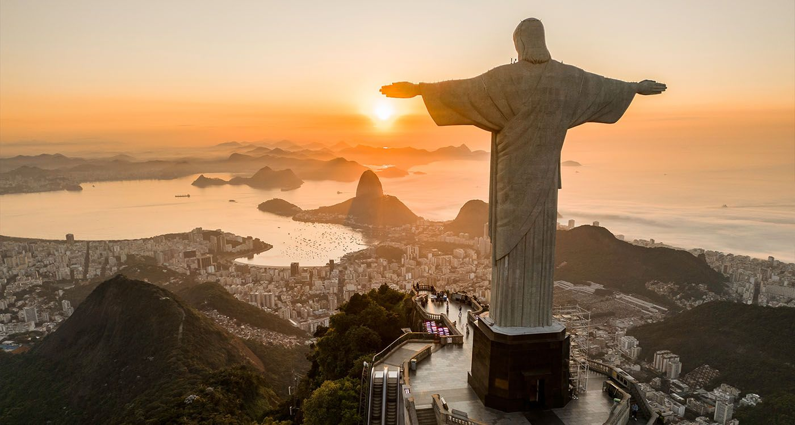
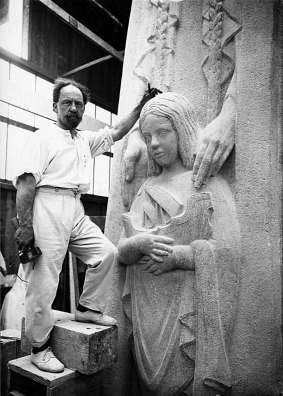
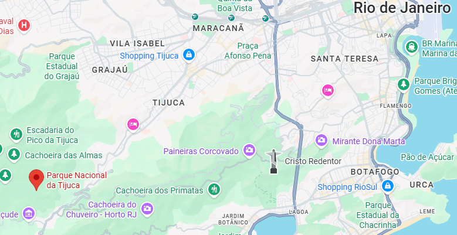
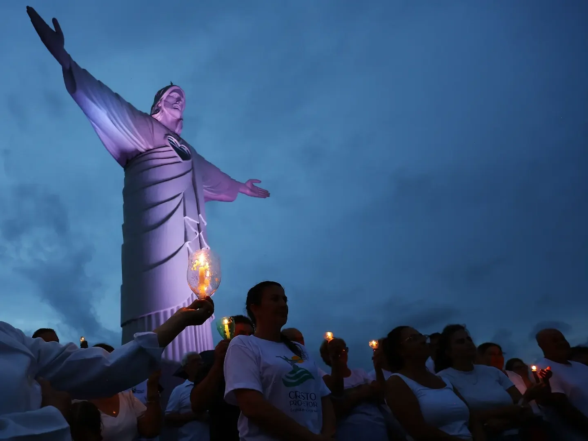

Apparence
Du haut de ses 38 mètres, le Christ rédempteur est à la fois une statue et un symbole pour la population de Rio de Janeiro.
Il est situé sur le mont corcovado à 710 mètres d'altitude et pèse environ 1200 tonnes.

Du haut de ses 38 mètres, le Christ rédempteur est à la fois une statue et un symbole pour la population de Rio de Janeiro.
Il est situé sur le mont corcovado à 710 mètres d'altitude et pèse environ 1200 tonnes.

Le Christ rédempteur a été conçu par l'ingénieur brésilien Heitor da Silva Costa et la statue réalisée par le sculpteur français Paul Landowski et le sculpteur roumain Gheorghe Leonida.

Le christ Rédempteur est le fruit de multiples décisions qui ont amené à sa réalisation. Le père lazariste Pedro Maria Boss voulait créer un grand monument religieux en 1859 au sommet du mont Corcovado. En 1922 a été décidé de construire le monument qui fut suggérer par le père. Les travaux ont débuté en 1926 par Paul Landowski. L’œuvre a alors été inaugurée en 1931 à Rio. .

Le Christ Rédempteur à plusieurs activités touristiques associés à lui, notamment le Parc national de la Tijuca et le train historique du Corcovado. Les personnes y viennent pour admirer la vue et aussi le fabuleux Christ Rédempteur.

Au cinéma et dans la culture populaire, le Christ Rédempteur est devenu un raccourci visuel pour représenter Rio et le Brésil : on le voit par exemple dans le film d'animation Rio, dans des films d'action, de catastrophe, ou encore dans des adaptations modernes de classiques.
Pour le peuple brésilien, il ne s’agit pas seulement d’un monument touristique : la statue est un sanctuaire, lieu de messes, de célébrations nationales et religieuses, et elle est souvent illuminée et décorée par le peuple parfois même priée.
